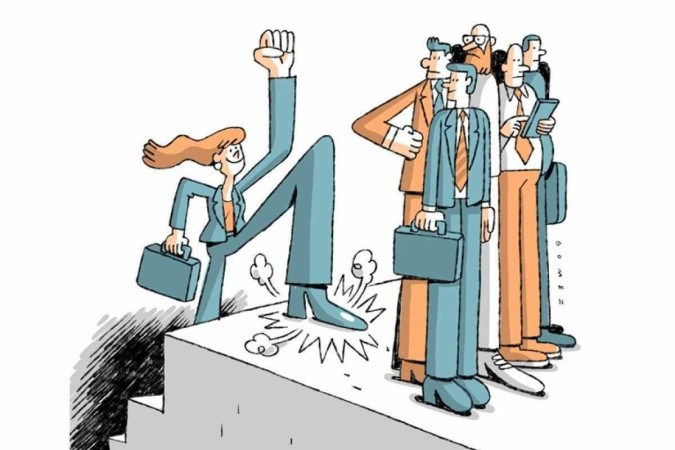
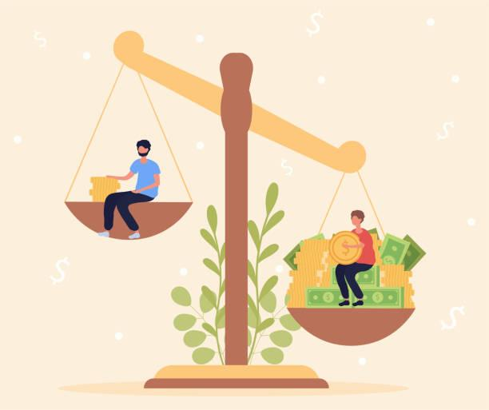

A desigualdade social se refere à distribuição desigual de recursos, poder e oportunidades entre diferentes grupos na sociedade. Ela pode se manifestar de várias formas, como desigualdade de renda, acesso à educação e saúde, e discriminação racial ou de gênero.
A desigualdade social tem sérios impactos em todos os aspectos da vida humana. Ela afeta o acesso a serviços básicos como educação, saúde e moradia, perpetuando um ciclo de pobreza e exclusão social.
Para combater a desigualdade social, é necessário promover políticas públicas que garantam uma distribuição mais justa de recursos e oportunidades. Isso inclui a melhoria no acesso à educação, a reforma tributária, e a promoção de igualdade racial e de gênero.